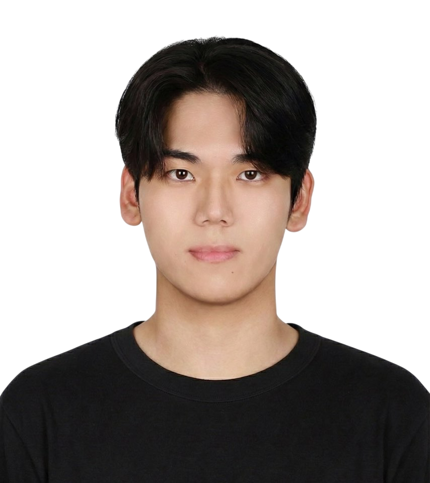

Integrated M.S./Ph.D. Student · CIPLAB, Yonsei University

I am an Integrated M.S./Ph.D. student in Artificial Intelligence at Yonsei University, advised by Prof. Seon Joo Kim. I received my Bachelor's degree in Applied Artificial Intelligence from Sungkyunkwan University in February 2026.
My research interests lie in 3D Understanding, including 3D Gaussian Splatting, Neural Radiance Fields, and 3D scene representation for real-world perception.
If you have any questions or suggestions, please feel free to contact me via email (jhcho@yonsei.ac.kr) or LinkedIn!